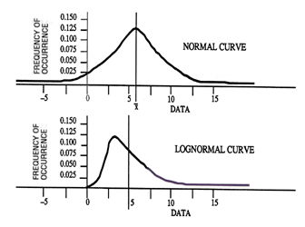
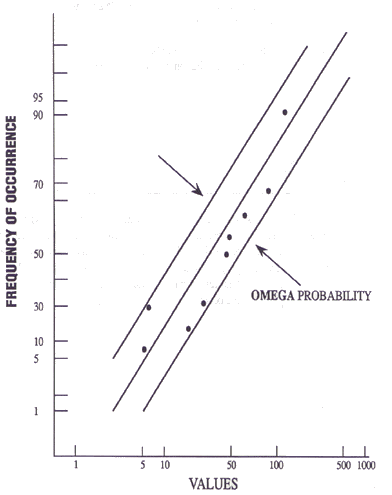

Normal distribution plots are displayed as a bell curve. Air monitoring data typically results in a lognormal curve, as shown in the following illustration.

To make decisions with less data than would be required if no distribution was assumed, Logan assumes that the data is lognormally distributed, and then verifies this assumption by using the OMEGA probability feature, which measures the distance between two parallel lines that encompass all the data points.

If the distance between the lines exceeds what might be expected for a lognormal distribution, Logan expresses the discrepancy in terms of OMEGA probability. If the probability is less than 0.05, the data differ significantly from the lognormal model, and you may need to keep this in mind when making decisions based on the data. If the probability is between 0.05 and 0.10, use caution in making decisions.